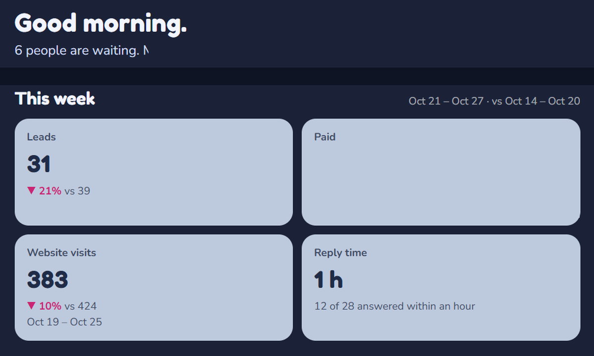
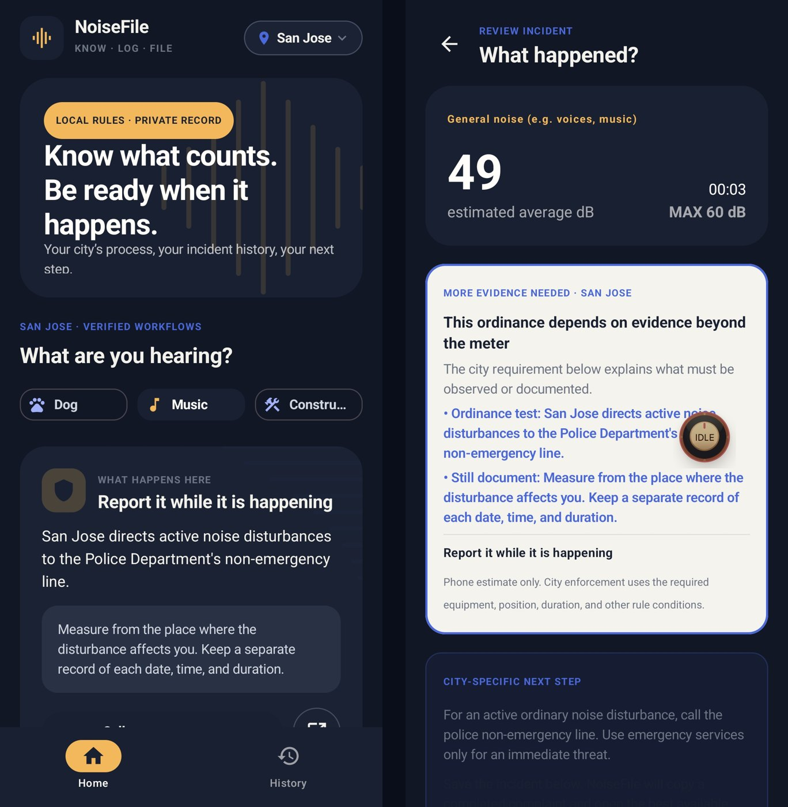
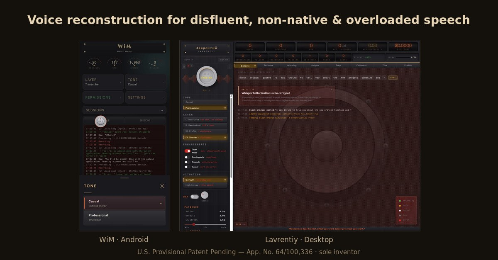

AI operationsIn daily use
40+cloud functions
Interface preview
01 / AI operationsIn daily use
Bakers Agent
One upload. Five platforms. A person makes the final call.
See the projectLAW, AI & THE WORK BETWEEN
A JD who builds AI products and runs them in real use. Legal operations, compliance, and the automation that sits on top of them.

One dashboard for the work behind a real bakery.

Municipal codes become a process someone can follow.

One speech system, built for Android and Windows.
01 / SELECTED WORK
Three real problems. Three working systems.
Each one has a story and proof you can open.
One upload. Five platforms. A person makes the final call.
See the project36 cities. Different rules. One clear next step.
See the projectA pause should never end your sentence.
See the project02 / THE PERSON BEHIND THE WORK
Contracts. Regulated operations. Multistate tax controversy. Then building the tools I wanted to exist.
JD, UC College of the Law, San Francisco (UC Hastings), tax concentration. BA, UC Berkeley, Political Science, with distinction. English, Armenian, Russian.
The full resumeEight years in contracts, regulated operations, and multistate tax controversy, then two years building. At Andersen I managed audit defense, refund claims, voluntary disclosures, and nexus reviews for corporate and startup clients, and led engagements where the state tax treatment of major technology transactions was in dispute. As COO of Phenotopia I ran a $1.75 million regulated buildout through permits, construction, inspections, and opening, and took a 33-page conditional-use application through unanimous local approval and state licensing. As a judicial extern at the U.S. Department of Labor I drafted a Defense Base Act decision that was affirmed on appeal.
03 / NOTES FROM THE WORK
Research, tools, and lessons from working
with AI every day.
February 2026 · every eval asks what the model did; this one asks what the human had to do. 512 real conversations across Claude and ChatGPT; paper, tool, data, and demo on one page
the diagnostic behind the paper: dropped instructions, correction persistence, operator burden
December 2025 · 29 pages, 17 citations, on LinkedIn
a tamper-evident evidence system: SHA-256 hash chains, pre-commit confidence declarations, contradiction checks. Private project; a walkthrough is available on request.